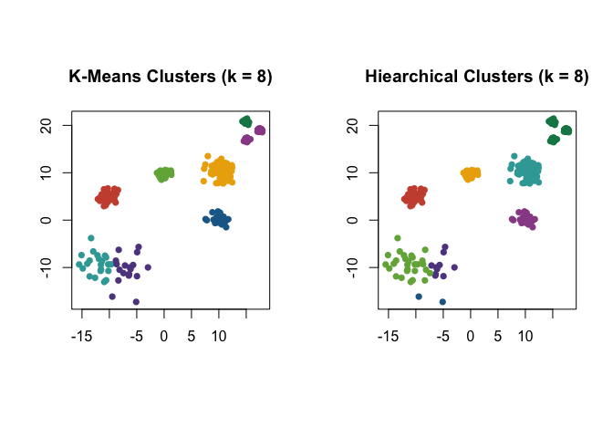

Katherine Moore, Kenneth Berenhaut, and Lucy D’Agostino McGowan January 2022
This package provides an implementation of the Partitioned Local Depths (PaLD) approach which consists of a measure of local depth and the cohesion of a point to another which, together with a universal threshold for distinguishing strong and weak ties, may be used to reveal local and global structure in data. No extraneous inputs, distributional assumptions, iterative procedures nor optimization criteria are employed. This package includes functions for computing local depths and cohesion matrices as well as flexible functions for plotting community networks and displays of cohesion against distance.
For further discussion of the perspective, including some theoretical results and applications, see:
Berenhaut, Kenneth S., Katherine E. Moore, and Ryan L. Melvin. 2022. “A Social Perspective on Perceived Distances Reveals Deep Community Structure.” Proceedings of the National Academy of Sciences, 119 (3).
Installation
You can install the development version of pald from GitHub with:
# install.packages("devtools")
devtools::install_github("LucyMcGowan/pald")Input
The input for the Partitioned Local Depths (PaLD) approach is a distance matrix (or dist object) associated with a finite collection of data points. Throughout, no distributional assumptions, iterative procedures nor optimization criteria are employed.
The only information extracted from the distance matrix are within-triplet dissimilarity comparisons. As a result, outputs are unaffected by monotone transformations of the collection of distances (e.g., log2). Further, one may transform any measure of similarity, s(x,y), to a measure of dissimilarity, d(x,y), via any order-reversing monotone transformation, for instance by taking d(x,y) = 1/(1+s(x,y)). This provides the user some flexibility in the choice of dissimilarity (e.g., triangle inequality is not required) and care should be taken at this stage.
The function dist() from the stats package converts an input data frame (with n rows) into an n × n distance matrix. In Euclidean examples here, we will use the default Euclidean distance.
A Small Example
For demonstration purposes, let’s begin with the small example from Figure 1 in (Berenhaut, Moore, and Melvin 2022).
The wrapper function pald() computes the cohesion matrix from which local depths are determined and community networks may be formed. In the plots of the community networks, strongly cohesive pairs are colored according to connected component. Such connected components may be considered “(community) clusters.” Note that the Fruchterman Reingold (FR) force-directed network drawing algorithm employed here will provide somewhat different graph layouts each time it is run.
par(mfrow = c(1, 2), pty = "s")
D <- dist(exdata1)
pald_results <- pald(D, emph_strong = 1, vertex.label.cex = 3)
###
plot(exdata1,
pch = 16,
xlim = c(-2.5, 2.25),
ylim=c(-1.5, 3.25),
xlab = "",
ylab = "",
main = "Local Depths")
text(exdata1 + .23,
lab = round(pald_results$local_depths, 2),
xlim = c(-2.5, 2.25),
ylim = c(-1.5, 3.25),
xlab = "",
ylab = "",
cex = .8)
The wrapper function pald() returns a list containing: the cohesion matrix, local depths, (community) clusters, the threshold for identifying strong ties, the thresholded and symmetrized cohesion matrix, the community graph whose edges are weighted by mutual cohesion, the weighted graph of strong ties, and the layout provided by the FR network drawing algorithm applied to the community graph.
Each time the function pald() is called, the matrix of cohesion values is re-computed. To avoid unnecessary computation, the following functions are included: local_depths(),strong_threshold(), cohesion_strong(), community_graphs(), and plot_community_graphs(). We will now walk through each function in turn.
Cohesion Matrix
Cohesion reflects relationship strength from the perspective of relative position, see (Berenhaut, Moore, and Melvin 2022). To begin PaLD analysis, we must first compute the matrix of cohesion values from the input distance matrix or dist object. Note that cohesion is not symmetric. The values, C[x,w], in the cohesion matrix are interpretable probabilities which capture the strength of the alignment of w to x. The sum of the cohesion matrix is always equal to n/2 (where n is the number of data points).
D <- dist(exdata1)
C <- cohesion_matrix(D)
round(C, 4)
#> 1 2 3 4 5 6 7 8
#> 1 0.1658 0.1199 0.1199 0.0179 0.0179 0.0000 0.0000 0.0000
#> 2 0.1306 0.1765 0.0179 0.1199 0.0000 0.0000 0.0204 0.0765
#> 3 0.1187 0.0204 0.1646 0.1054 0.0383 0.0179 0.0000 0.0000
#> 4 0.0179 0.1043 0.1043 0.1787 0.0621 0.0954 0.0621 0.0000
#> 5 0.0179 0.0000 0.0357 0.0561 0.1871 0.1216 0.0799 0.0000
#> 6 0.0000 0.0000 0.0204 0.0765 0.1599 0.2075 0.1599 0.0179
#> 7 0.0000 0.0179 0.0000 0.0595 0.0799 0.1216 0.1871 0.0357
#> 8 0.0000 0.0799 0.0000 0.0000 0.0000 0.0179 0.0357 0.1514
#> attr(,"class")
#> [1] "cohesion_matrix" "matrix" "array"
# A heat-map of the cohesion matrix
image(t(apply(C, 2, rev)), main = "Cohesion Matrix Heatmap")Local Depths
Local depth is a probability which describes the support for each point in data-determined local foci. Cohesion is obtained by partitioning local depth, and thus the values of local depth can be computed as the row sums of the cohesion matrix. See also Figure 2(b), above. The average of the values of local depth is always equal to 1/2.
# local depths are obtained by computing: rowSums(C)
local_depths(C)
#> 1 2 3 4 5 6 7 8
#> 0.4413265 0.5418367 0.4653061 0.6246599 0.4982993 0.6420068 0.5017007 0.2848639
mean(local_depths(C))
#> [1] 0.5Threshold and Strong Ties
The threshold provided in (Berenhaut, Moore, and Melvin 2022) for distinguishing between strongly and weakly cohesive pairs is equal to of half the average of the diagonal of the cohesion matrix. A function for computing this is provided.
# the threshold is obtained by computing: mean(diag(C))/2
strong_threshold(C)
#> [1] 0.08866922Pairs of points for which mutual cohesion (i.e., min {Cx, w, Cw, x}) is greater than the above threshold are considered to be ``strongly cohesive.” The thresholded and symmetrized cohesion matrix can be obtained using the function ‘cohesion_strong.’
round(cohesion_strong(C), 4)
#> 1 2 3 4 5 6 7 8
#> 1 0.1658 0.1199 0.1187 0.0000 0.0000 0.0000 0.0000 0.0000
#> 2 0.1199 0.1765 0.0000 0.1043 0.0000 0.0000 0.0000 0.0000
#> 3 0.1187 0.0000 0.1646 0.1043 0.0000 0.0000 0.0000 0.0000
#> 4 0.0000 0.1043 0.1043 0.1787 0.0000 0.0000 0.0000 0.0000
#> 5 0.0000 0.0000 0.0000 0.0000 0.1871 0.1216 0.0000 0.0000
#> 6 0.0000 0.0000 0.0000 0.0000 0.1216 0.2075 0.1216 0.0000
#> 7 0.0000 0.0000 0.0000 0.0000 0.0000 0.1216 0.1871 0.0000
#> 8 0.0000 0.0000 0.0000 0.0000 0.0000 0.0000 0.0000 0.1514
#> attr(,"class")
#> [1] "cohesion_matrix" "matrix" "array"Community Structure and Display
The overall structure of the data can be observed via the networks obtained from cohesion (referred to here as “community graphs”). The community graph is a symmetric, weighted graph which is obtained from symmetrizing the cohesion matrix (using min {Cx, w, Cw, x}) and removing self-loops. The “community cluster graph” is the subgraph consisting of only the edges for which mutual cohesion greater than the above threshold.
The connected components of the community cluster graph, G_strong, are referred to the (community) clusters of the data. Note that no additional inputs (e.g., number of clusters, neighborhood size) nor optimization criteria are employed in (community) cluster identification.
Strong ties between points will not be severed; if further partitioning of the community graph is desired, one could employ other methods (for instance, the Louvain method) to the resulting community graphs.
graphs <- community_graphs(C)
community_clusters(C)
#> point cluster
#> 1 1 1
#> 2 2 1
#> 3 3 1
#> 4 4 1
#> 5 5 2
#> 6 6 2
#> 7 7 2
#> 8 8 3A function for plotting the community graphs, in which the edges and vertices are colored according to cluster membership, is provided. The default layout is obtained via the Fruchterman Reingold (FR) force-directed graph drawing algorithm. Note that the FR force-directed algorithm will provide somewhat different layouts each time it is run.

You can save a particular network layout using community_graphs(C)$layout.The function plot_community_graphs can take a given layout as an argument. Below, let’s overlay the community graph on the original data, that is, plot the network using the layout provided by the orignal data.
par(pty = "s")
plot(exdata1,
xlim = c(0, 1),
ylim = c(0, 1),
col = "white",
xlab = "",
ylab = "")
par(new = TRUE)
plot_community_graphs(C, layout = as.matrix(exdata1), show_labels = FALSE)
Cohesion Against Distance
Observe that cohesion is not a direct transformation of distance. The dist_cohesion_plot() function provides a plot of pairwise distances and associated value(s) of cohesion; the horizontal line indicates the threshold. Within-cluster edges are colored, and weak ties are plotted as open circles. See (Berenhaut, Moore, and Melvin 2022) for more on the interpretation of these plots.
Let’s re-create Figure 2 in (Berenhaut, Moore, and Melvin 2022).
D <- dist(exdata2)
C <- cohesion_matrix(D)
par(mfrow = c(1, 2))
par(pty = "s")
plot(exdata2,
col = "white",
xlab = "",
ylab = "")
par(new = TRUE)
plot_community_graphs(C,
layout = as.matrix(exdata2),
show_labels = FALSE,
vertex.size = 3)
dist_cohesion_plot(D, cex = .8, weak_gray = TRUE)
Rather than showing both pairs, (d(x, y), C(x, w)) and (d(x, y), C(w, x)) as distinct points in the plot, setting mutual = TRUE will only plot mutual cohesion, that is the set of points with x-coordinate d(x, y) and y-coordinate min{C(x, w), C(w, x)}.
par(pty = "s")
D <- dist(exdata2)
dist_cohesion_plot(D, mutual = TRUE)Randomly-Generated Data
In this example, we consider a randomly-generated data set of 15 points. Points are selected according to the uniform distribution on the unit square. We first compute the distance matrix and from this calculate the cohesion matrix. We overlay the community graphs on the data set using plot_community_graphs and use our original data as the layout.
ex_data <- matrix(runif(30), ncol = 2)
D <- dist(ex_data)
C <- cohesion_matrix(D)
par(pty = "s")
plot(
ex_data,
xlim = c(0, 1),
ylim = c(0, 1),
col = "white",
xlab = "",
ylab = ""
)
par(new = TRUE)
plot_community_graphs(
C,
layout = ex_data,
emph_strong = 1,
show_labels = FALSE,
edge_width_factor = 50,
vertex.size = 8
)
Cognate-based Language Families
Let’s perform PaLD analysis on the cognate data set from (Dyen, Kruskal, and Black 1992). For clarity of the display, we show how to only include (a random set of the) 37 vertex labels. The remaining arguments are for aesthetics of the plot. Note that the network layout is somewhat different each time the FR network drawing algorithm is called.
C_lang <- cohesion_matrix(cognate_dist)
lang_lab_subset <- rownames(C_lang)
lang_lab_subset[sample(1:87, 50)] <- ''
plot_community_graphs(
C_lang,
edge_width_factor = 30,
emph_strong = 3,
vertex.label = lang_lab_subset,
vertex.label.cex = .65,
vertex.size = 3
)
One could alternatively use the wrapper function: pald(cognate_dist, emph_strong = 3, edge_width_factor = 30, vertex.label = lang_lab_subset, vertex.label.cex = .65, vertex.size = 3). It will return a list containing: the cohesion matrix, local depths, (community) clusters, the threshold for identifying strong ties, the thresholded and symmetrized cohesion matrix, the community graph whose edges are weighted by mutual cohesion, the weighted graph of strong ties, and the layout provided by the FR network drawing algorithm applied to the community graph.
One can determine the (strongly cohesive) neighbors using igraph’s neighbor function. Edge-weights are given by cohesion (or mutual cohesion) and can be found directly from the cohesion matrix.
library(igraph)
G_strong_lang <- community_graphs(C_lang)$G_strong
neighbors(G_strong_lang, "French")
#> + 8/87 vertices, named, from a2e3ffe:
#> [1] Italian Ladin Provencal Walloon
#> [5] French_Creole_C French_Creole_D Spanish Catalan
#And print associated neighborhood weights
C_lang["French", neighbors(G_strong_lang, "French")]
#> Italian Ladin Provencal Walloon French_Creole_C
#> 0.01997696 0.02094596 0.02871174 0.03258771 0.02406057
#> French_Creole_D Spanish Catalan
#> 0.02406057 0.01679733 0.01859688Clustering in the Presence of Varying Density
Cohesion is particularly useful when considering data with varying local density, see discussion in (Berenhaut, Moore, and Melvin 2022). Note that PaLD was able to detect the eight natural groups within the data without the use of any additional inputs (e.g., number of clusters) nor optimization criteria. Despite providing the “correct” number of clusters (i.e., k = 8) both k-means and hierarchical clustering did not give the desired result.
D3 <- dist(exdata3)
C3 <- cohesion_matrix(D3)
par(pty = "s")
plot(
exdata3,
col = "white",
xlab = "",
ylab = "",
main = "PaLD Community Graphs"
)
par(new = TRUE)
plot_community_graphs(
C3,
layout = as.matrix(exdata3),
show_labels = FALSE,
emph_strong = 25,
edge_width_factor = 2,
vertex.size = 5
)
### The cluster vector is provided by `pald' and also may be computed via:
library(igraph)
cluster_graph <- community_graphs(C3)$G_strong
#pald_cluster_vector<- clusters(cluster_graph)$membership
table(clusters(cluster_graph)$membership)
#>
#> 1 2 3 4 5 6 7 8
#> 40 40 60 20 20 20 20 20Here are the results for the data obtained from k-means and hierarchical clustering when k = 8.
par(mfrow = c(1, 2), pty = "s")
km_clusters <- kmeans(exdata3, 8)$cluster
plot(
exdata3,
pch = 16,
col = pald_colors[km_clusters],
xlab = "",
ylab = "",
main = "K-Means Clusters (k = 8)"
)
h_clusters <- cutree(hclust(dist(exdata3)), k = 8)
plot(
exdata3,
pch = 16,
col = pald_colors[h_clusters],
xlab = "",
ylab = "",
main = "Hiearchical Clusters (k = 8)"
)
Berenhaut, Kenneth S., Katherine E. Moore, and Ryan L. Melvin. 2022. “A Social Perspective on Perceived Distances Reveals Deep Community Structure.” Proceedings of the National Academy of Sciences 119 (3).
Dyen, Isidore, Joseph B. Kruskal, and Paul Black. 1992. “An Indoeuropean Classification: A Lexicostatistical Experiment.” Transactions of the American Philosophical Society 82 (5): iii. https://doi.org/10.2307/1006517.